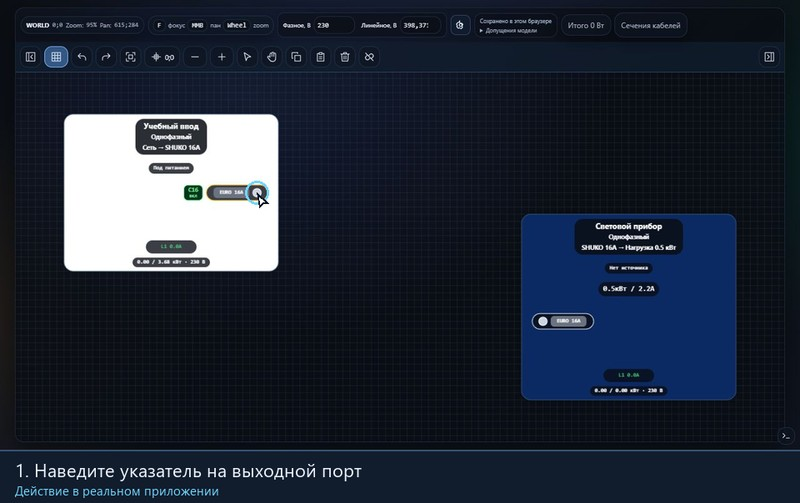
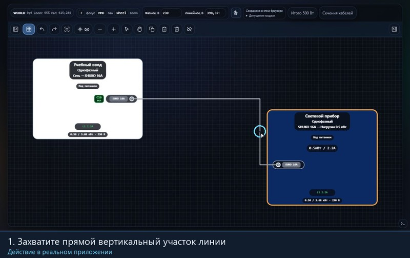
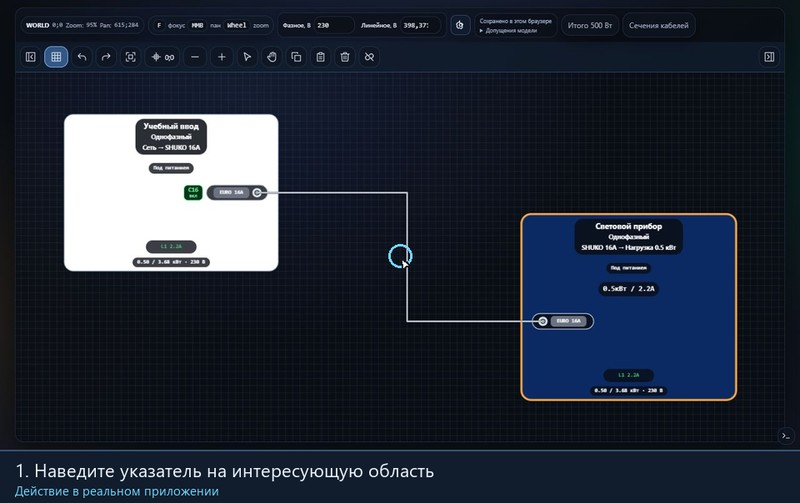
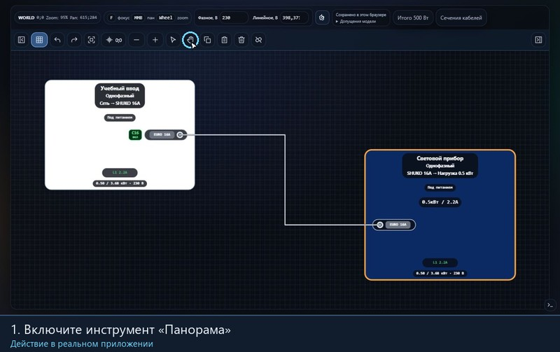

WORLD0;0Zoom:100%Pan:0;0
0;0
Кабели, сценарии защиты и разъёмы в свойствах портов. Резервный ввод в свойствах дистрибьютора. Расширенный поиск трасс.
Выделите начальную и конечную ноду с Shift или Ctrl: подсветится путь между ними.
Автоматически отключать автоматы при превышении номинального тока.
Ничего не найдено. Попробуйте другое слово.
Пример: однофазный потребитель 2300 Вт при фазном напряжении 230 В создаёт расчётный ток 10 А. Укажите напряжение в верхней панели: линейное и фазное связаны между собой.
Установите ElectricCAD Easy с помощью Setup.exe. Установщик позволяет выбрать папку программы и создать ярлык. Права администратора для установки текущему пользователю не требуются. Редактор, расчёты, экспорт и вся справка работают без интернета; «Хаб» и GitHub открываются в обычном браузере.
Данные приложения находятся в %APPDATA%\ElectricCAD Easy. Нажмите «Открыть папку данных» в блоке проекта или в меню «Проект». Projects/current.json — автоматически сохраняемый рабочий проект, Backups/previous.json — предыдущая версия; Settings содержит ваши модули и настройки. Копии JSON предлагается сохранять в Projects, PDF/PNG/JPG — в Exports. Можно выбрать любую другую папку в системном диалоге.
«Сохранить» и Ctrl+S записывают текущий проект на компьютер. Изменения также сохраняются автоматически и при закрытии. Для самостоятельного файла нажмите «Скачать» (Ctrl+Shift+S). Для переноса с сайта сначала скачайте JSON в браузере, затем откройте его через «Импорт» (Ctrl+Shift+O) в приложении. Сайт и EXE не синхронизируются автоматически. Перед обновлением сохраняйте важные проекты отдельными JSON. Обновление сохраняет папку данных. При удалении программы данные сохраняются, если не отмечен флажок «Удалить данные приложения».
Откройте «Настройки приложения» кнопкой в блоке проекта, через меню приложения или Ctrl+,. Выберите русский или английский язык: меняются подписи интерфейса и справка, ваши названия и данные проекта сохраняются. Опция проверки обновлений обращается к стабильным релизам GitHub раз в неделю при запуске и во время работы; «Проверить сейчас» запускает проверку вручную. Обновление загружается в фоне, а установка выполняется отдельной кнопкой после сохранения проекта.
Слева находятся «Проект» и «Каталог модулей», справа — «Итого», «Дерево проекта» и «Свойства». Нажмите заголовок блока, чтобы свернуть или раскрыть его. Разделитель между блоками перетаскивается; также используйте стрелки, Home и End на сфокусированном разделителе. Перемещение раскрывает соседние блоки. Кнопки по краям центральной панели скрывают и показывают боковые панели.
В веб-версии «Сохранить» записывает проект в хранилище текущего браузера. «Скачать» выгружает редактируемый JSON; «Импорт» загружает такой файл, «Очистить» начинает пустой проект. JSON используйте для резервной копии и переноса: разные браузеры и адреса, включая file:// и сайт, не делят локальное хранилище. Импорт проекта ограничен 12 МБ; неподходящий файл не заменяет текущую схему.
В «Итого» показаны фактическая суммарная нагрузка и нагрузки отдельных вводов. В дереве один клик выбирает модуль, двойной — центрирует его; быстрый выбор также находит модуль на поле. «Свойства» относятся к выделению.
Запустите нужную демонстрацию кнопкой под изображением. Одновременно проигрывается одна GIF; «Остановить» возвращает первый кадр.
Зажмите выходной порт, проведите к совместимому входу и отпустите ЛКМ.

Возьмитесь за корпус модуля и перетащите его. Связанные кабели следуют за ним.
Потяните прямой участок поперёк линии. Порты останутся подключены.

Прокрутите колесо над нужным местом: вверх — приблизить, вниз — отдалить.

Зажмите колесо и перемещайте вид либо включите «Панораму» и тяните свободный фон ЛКМ.

ЛКМ — левая кнопка мыши, ПКМ — правая, СКМ — нажатие на колесо. Полотно — центральная область с сеткой. Нода — модуль на полотне; круглая точка в его разъёме — порт подключения. Наведите указатель на кнопку панели, чтобы увидеть её подсказку.
Кнопка со стрелкой включает «Выделение»: можно выбирать и перемещать модули, соединять порты и выделять рамкой. Кнопка с ладонью включает «Панораму»: перетаскивайте свободный фон, чтобы перемещать вид. Для работы с модулями и портами вернитесь к стрелке. Кабельные линии и их плашки имеют собственные действия, поэтому для панорамы беритесь за фон.
Текущий масштаб показан справа в тулбаре как Zoom, смещение вида — как Pan. Масштаб полотна не изменяет расчётные длины кабелей и настройки масштаба экспортируемого чертежа.
Кнопка сетки включает привязку перемещений модулей и сегментов кабеля. При сильном отдалении отображаются только крупные линии сетки через 120 единиц; шаг привязки остаётся 12. Модули не проходят сквозь друг друга; если путь или место заняты, сдвиг может ограничиваться. Освободите место или примените в шестерёнке «Авторасстановка модулей»: она раздвигает тесно расположенные модули до зазора 96 единиц. Escape во время переноса модуля возвращает его назад, а после отпускания мыши используйте «Отменить».
Удаляется кабельное соединение, сами модули остаются. Ошибочное разъединение можно отменить. В шестерёнке опция «Подсветка всей ветки» выделяет путь между двумя выбранными модулями.
Перекладка рисунка линии не меняет заданную длину кабеля в метрах. В продвинутом режиме двойной клик по линии или обычный клик по её плашке открывает длину, а ПКМ по плашке — профиль кабеля. Плашку с длиной, ΔU и ΔP можно перетащить вдоль линии отдельно от маршрута. Если плашки нет, включите «Продвинутый режим» в шестерёнке и задайте положительную длину кабеля.
Выделите модули и нажмите «Копия» или Ctrl/Cmd+C, затем «Вставить» или Ctrl/Cmd+V. Копируются выбранные модули и связи между ними; соединения с невыбранными модулями не копируются. Вставленная группа появляется около центра видимой области, а при нехватке места сдвигается вниз. Буфер относится к текущему редактору; для переноса проекта в другой браузер используйте JSON.
Ctrl/Cmd+X вырезает выделение. «Удалить», Delete или Backspace удаляют выбранные модули вместе с подключёнными к ним связями. «Отменить» и «Повторить» возвращают изменения проекта; изменение масштаба и панорамы не является отдельным шагом истории. Во время переноса модуля, лассо, панорамы или выбора первого порта Escape отменяет незавершённое действие. В открытой справке или редакторе модуля Escape закрывает окно; при просмотре увеличенного изображения сначала закрывается изображение.
Кнопки у левого и правого края панели инструментов скрывают соответствующие сайдбары. Заголовок каждого блока сворачивает его содержимое. Перегородка с ручкой между блоками изменяет их высоту; перетаскивание раскрывает соседние свёрнутые блоки. Для управления перегородкой с клавиатуры выберите её клавишей Tab, затем используйте ↑/↓; Home задаёт минимальную высоту верхнего блока, End — максимальную.
Нажатие на корпус выбирает модуль для «Свойств». Раскройте нужный порт в свойствах для его параметров. Клик по плашке автомата переключает его состояние; номинал и характеристика настраиваются в свойствах. Окно «Настройки приложения» содержит продвинутый режим, подсветку ветки и автоматическое срабатывание. Команды включения и выключения всех автоматов, проверки автоматов, перестройки трасс и авторасстановки модулей находятся в тулбаре. Продвинутый режим добавляет настройки и расчёты кабелей; режим «Панорама» меняет только работу указателя. В «Кабелях» и «Свойствах» описаны параметры этих режимов.
Ниже Ctrl/Cmd означает Ctrl в Windows/Linux или Command в macOS. Буквенные команды определяются физической клавишей, поэтому работают и при русской раскладке. Пока курсор находится в текстовом или числовом поле, сочетания сохраняют обычное поведение поля.
Раскрывайте категории и группы каталога или введите название, разъём либо номинал в поиск. Нажатие на элемент добавляет модуль на поле. Кнопки под заголовком создают модуль, выгружают или импортируют пользовательские шаблоны; их подсказки объясняют действия.
В конструкторе выберите тип, фазность и название. Для ввода задайте доступный ток и при необходимости щит с автоматами; для потребителя — вход и мощность; для остальных — вход и нужные выходы, их разъёмы, номиналы, фазы и автоматы. Предварительный вид показывает создаваемый модуль. «Создать» добавляет модуль в проект, «Сохранить шаблон» сохраняет его в каталоге.
Пользовательские шаблоны и проект импортируются отдельно. Файл шаблонов — JSON размером до 2 МБ, с 1–1500 элементами; дубликаты пропускаются. Шаблон можно удалить из каталога. Для изменения существующего модуля используйте редактор в свойствах; перед удалением занятого порта разъедините его.
Соединяйте выход со входом: перетащите линию от одного порта к другому или нажмите порты последовательно. Разъединение — ПКМ по порту, кнопка разъединения при выборе порта или действие в его свойствах. Связь проверяется на совместимость разъёмов, фазности, номиналов и занятость портов; петли в графе не допускаются.
Маршрут прокладывается автоматически. Перетащите прямой сегмент поперёк, чтобы изменить его положение; ПКМ по линии возвращает автоматический маршрут. В меню шестерёнки «Перестроить трассы» заново строит все линии и сбрасывает ручные изгибы. Авторасстановка раздвигает модули там, где не хватает расстояния. При отсутствии свободного пути раздвиньте модули и перестройте трассы.
Опция «Подсветка всей ветки» показывает путь между двумя выбранными модулями. На полотне выбирайте их с Shift; в дереве также подходят Ctrl или Cmd. Ветками считаются цепи от отдельных вводов.
Выберите модуль для настройки его имени, параметров и портов. Для нескольких выбранных потребителей групповое изменение мощности задаёт новое значение каждому. В продвинутом режиме доступны дополнительные данные разъёмов, кабелей и защит; для дистрибьютора можно добавить резервный ввод.
Фазу однофазного выхода задают на дистрибьюторе; нагрузка наследует её вниз по цепи. Плашка автомата у порта показывает номинал и состояние и позволяет переключать его. В меню шестерёнки доступны «Включить все автоматы», «Проверить автоматы» и режим автоматического срабатывания при превышении токового порога. Отключённый автомат прерывает питание; требуемая нагрузка при этом не исчезает.
В шестерёнке включите «Продвинутый режим». Двойной клик по линии или нажатие на кабельную плашку открывает длину; ПКМ по плашке — профиль линии. Плашку можно перемещать вдоль линии. Пустая длина означает, что она не задана.
«Сечения кабелей» задают значения по номиналам; отдельный профиль позволяет изменить параметры конкретной линии. Укажите длину, сечение, материал и нужные пределы. Рядом отображаются падение напряжения ΔU и потери ΔP. Карточка пределов длины показывает отдельные оценки: по заданному порогу ΔU, по доступной мощности при нагрузке и условную границу ΔU = 100%. Изменение длины не перемещает ноды.
Порог падения по умолчанию — 5% и может задаваться в модели; это не универсальный норматив для любой установки. Расчёты являются упрощёнными оценками и не заменяют проектную проверку кабеля и защиты.
Откройте «Экспорт» в проекте. Выберите формат листа и ориентацию, масштаб схемы и компоновку. При нескольких ветках можно разнести их по листам; отдельный переключатель добавляет кабельный журнал. Выберите лист для просмотра. A4–A0 поддерживают книжную и альбомную ориентацию.
Колесо и кнопки «−»/«+» увеличивают только предпросмотр; перетаскивание перемещает изображение, кнопка рамки возвращает весь лист. Это не меняет масштаб в экспортируемом файле. Заполните название детали, обозначение, проектировщика и дату — они попадут в основную надпись.
PNG и JPG сохраняют текущий лист; PDF содержит все листы. Кнопка JSON скачивает редактируемый проект. В журнале приводятся источники и потребители, их порты, состав и сечение жил, длина, падение напряжения, напряжение, потери и фактическая нагрузка; значения зависят от заданных параметров и текущего расчёта.
Перегрузка на фазе. Расчётный ток превышает номинал элемента. Постоянное сообщение указывает фазу и источник; нажмите его название для перехода. Уменьшите нагрузку, распределите её по фазам или проверьте номиналы. При включённом автоматическом срабатывании соответствующий автомат может отключиться.
Перегрузка / дисбаланс фаз / не хватает мощности (ΔU). Предупреждения на модулях обозначают превышение тока, значительную неравномерность фаз или недостаточную расчётную доступную мощность с учётом падения напряжения. Проверьте нагрузки, состояние автоматов, длины и параметры линий выше по цепи.
Нет свободного маршрута. Для части связей не найден путь между модулями. Раздвиньте их, используйте авторасстановку и перестройте трассы; провода не прокладываются сквозь препятствия в качестве запасного варианта.
Предупреждения кабеля. Диалог длины сообщает о доступной и требуемой мощности и превышении установленного предела ΔU. Измените длину, сечение или нагрузку и проверьте номиналы. Падение более 100% блокирует сохранение. Для ограничений по току проверьте разъёмы, автоматы и допустимый ток кабеля.
Ошибки соединения, импорта и сохранения. При несовместимых или занятых портах выберите подходящие свободные порты. При ошибке импорта проверьте тип, структуру, версию и размер файла; текущая схема не заменяется некорректным проектом. Если браузер не сохранил данные, скачайте JSON и проверьте доступное хранилище. Сообщение о неудачной загрузке шрифта означает, что экспорт схемы не готов; повторите после восстановления доступа к файлам приложения.
Обычные короткие уведомления исчезают через несколько секунд; сообщение о перегрузке имеет приоритет и остаётся до устранения причины.
«Порт не найден», «Соединение только выход → вход», «Разные механические ключи», «Разная фазность», «Разные разъёмы: нужен переходник», «Разные типоразмеры разъёма по току», «Узел нельзя соединить с собой», «Порт уже занят», «Циклы запрещены» — соединение отклонено; выберите свободные совместимые порты или используйте подходящий переход. «Нажмите второй порт на схеме или в свойствах» предлагает завершить начатое соединение; «Сначала нажмите порт» появляется при разъединении без выбора. «Под питанием», «Отключено автоматом» и «Нет источника» описывают текущий путь питания.
«Падение напряжения выше предела», «Ток выше допустимых для линии» и «Потери выше номинальной мощности линии» указывают конкретное ограничение. Проверьте нагрузку, параметры кабеля и соединённых портов. «Нехватка мощности выше по цепи питания» означает, что одно изменение длины текущего участка не устраняет вышестоящее ограничение. Если показано, что падение и потери при несимметричной трёхфазной нагрузке не оценены, задайте данные и проверьте модель до принятия решений.
«Сессия сохранена локально» подтверждает запись в этом браузере; для переноса скачайте JSON. «Восстановлена резервная локальная сессия» означает загрузку резервного снимка. При сообщении «Локальная сессия недоступна или повреждена» исходные данные остаются в хранилище, открывается пустой проект; не перезаписывайте его без резервной копии. «Проект изменён в другой вкладке» — скачайте свою версию до перезагрузки, чтобы не потерять изменения. При ошибке локального сохранения браузер может предупредить при закрытии страницы.
«Файл больше 12 МБ» — уменьшите файл проекта. «Ошибка импорта» описывает несоответствие формата, версии, идентификаторов, параметров или связей; исходный проект остаётся открытым. «Проект импортирован. Фазы пересчитаны» подтверждает успех. Для каталога: «Импорт модулей: …» сообщает причину отклонения файла или ошибку записи; «Импортировано модулей: N», «Все модули из файла уже есть в каталоге» и «Шаблон сохранён в локальном каталоге» описывают результат. «Не удалось сохранить каталог» — проверьте хранилище; перед удалением своего шаблона требуется подтверждение.
«Включено автоматов: N», «Все автоматы уже включены», «Отключено автоматов: N», «Перегрузок включённых автоматов нет» и «Скопировано N модулей» сообщают результат действия. При «Нет свободного места» или «Нет места для вставки» освободите место на поле. «Введите мощность», «Проверьте значение/диапазон» и ошибки конструктора требуют исправить указанные параметры. При «Сначала разъедините удаляемые порты» или «Сначала разъедините резервный ввод» удалите соответствующие соединения. Для паспортной кривой нужны точки с возрастающим током и допустимым диапазоном времени; некорректная операция не применяется.
Коэффициент мощности задаётся в настройках мира.
50 Гц — частота сети. Uф — фазное напряжение между фазой и нейтралью; Uл — линейное между фазами. Для симметричной трёхфазной сети Uл = √3 × Uф. Изменение одного поля пересчитывает второе.
Автоматы — пороговая модель по току. B/C/D — справочные характеристики. Продвинутый режим даёт оценку потерь и падения напряжения на заданном кабеле.
В синусоидальной модели cos φ = PF = P/S. Значение от 0,01 до 1 задаётся общим для нагрузок проекта. При той же активной мощности уменьшение cos φ увеличивает ток: I = P/(Uф × cos φ) на фазу; для симметричной трёхфазной нагрузки I = P/(√3 × Uл × cos φ). Токи определяют перегрузку и потери I²R. Падение напряжения оценивается по активному сопротивлению с множителем cos φ; реактивное сопротивление и гармоники не моделируются. При гармониках PF и cos φ могут отличаться.
Модель использует фазное напряжение Uф, линейное Uл = √3 × Uф, частоту 50 Гц и коэффициент мощности PF = cos φ из настроек мира. По умолчанию Uф = 230 В. Источники, порты, автоматы и соединения образуют направленный граф. Резервный ввод выбирается из доступных подключённых путей; при отсутствии доступного используется первый подключённый.
Однофазная нагрузка относится к наследуемой фазе, трёхфазная делится поровну: Pф = P/3. Требуемые мощности суммируются снизу вверх независимо от питания; фактические — для запитанных потребителей и выбранного пути. Ток каждой фазы Iф = Pф/(Uф × cos φ) рассчитывается по номинальному напряжению. Мощность узла и «Итого» — сумма соответствующих фактических мощностей; ветка привязана к своему вводу.
Перегрузка возникает при превышении фазным током номинала соответствующего входа, выхода или автомата. Дисбаланс отмечается при максимальном токе выше 0,05 А, если минимальный близок к нулю либо отношение максимума к минимуму не меньше 1,5. Показываемый процент: max |Iф − Iсред| / Iсред × 100%.
При заданной длине L и сечении S модель использует R = ρL/(1000S), где ρ для Cu = 23,7, для Al = 37,6; L в метрах, S в мм². Для однофазной линии ΔU = 2IR; для симметричной трёхфазной линейное ΔU = √3IR × cos φ. При несимметрии применяется максимальная фазная оценка R·(2Iф − (ΣI − Iф)/2) × cos φ. Относительное падение делится на Uл для симметричной трёхфазной линии, иначе на Uф.
Начальные сечения для номиналов 6, 10, 16, 32, 63, 125 и 250 А соответственно: 2,5; 2,5; 4; 10; 25; 50; 120 мм². По умолчанию выбраны медь, температура среды 20 °C и предел ΔU 5%; допустимый ток первоначально ограничен меньшим номиналом соединённых портов. Эти значения можно изменить в настройках и профиле линии.
Оценка тока нейтрали: Iн² = max(0, (3ΣIф² − (ΣIф)²)/2). Потери ΔP = R·(ΣIф² + Iн²). Напряжения уменьшаются последовательно по пути от источника. Если задано тепловое сопротивление, температура оценивается как температура среды + ΔP × тепловое сопротивление.
Допустимый ток ограничивают номиналы портов и автоматов, допустимый ток кабеля, падение напряжения и ограничения предыдущих участков. Доступная мощность оценивается по предельному току, конечному напряжению и числу фаз; при отсутствии питания она равна нулю. При сравнении с фактической нагрузкой может появиться предупреждение о нехватке мощности.
При ненулевом падении условная длина до ΔU = 100% равна L × U/ΔU, а длина по заданному проценту — этой величине, умноженной на процент/100. Предел по нагрузке ищется численно с учётом доступной мощности и ограничений выше по цепи; он ограничен максимальным значением поля длины. Это расчётные пределы модели, не разрешение на реальную прокладку.
Токи не пересчитываются по сниженному напряжению. Реактивное сопротивление, гармоники и реальные условия прокладки автоматически не моделируются. Результаты зависят от введённых параметров и не заменяют измерений или инженерного проекта.
В продвинутом режиме свойства позволяют задать данные петли L–PE, УЗО и пуска. Для TN/TT при заданном сопротивлении петли расчётный ток замыкания оценивается как Uф/Zпетли; отдельной модели IT нет. Для УЗО сравниваются дифференциальный ток с IΔn, измеренное время с заданным пределом, а для TT оценивается RA × IΔn с переводом мА в А.
Время автомата определяется по введённым паспортным точкам интерполяцией в логарифмических шкалах тока и времени; вне диапазона точек не определяется. Приоритет имеет заданный пусковой ток, иначе используется ток петли. Диапазоны времени считаются разделёнными, когда максимум времени нижестоящего автомата меньше минимума вышестоящего.
Для серии пусков тепловая оценка накапливает дозу: D ← D·exp(−пауза/время остывания) + длительность пуска/время по кривой; учитывается не более 1000 пусков. Эти оценки не подтверждают безопасность или нормативную пригодность защиты.
Связанный 3P для трёхфазного, 1P для однофазного модуля. Коммутируемые N/PE не моделируются.
Каждый выход настраивается отдельно ниже: разъём, номинал, фаза и автомат. Для 1ф ветки фаза наследуется от питания.